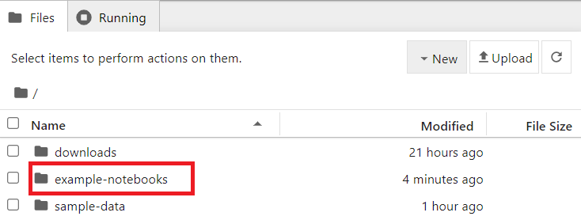
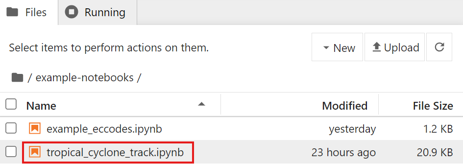

Baixando e decodificando dados do WIS2
Objetivos de aprendizagem!
Ao final desta sessão prática, você será capaz de:
- usar o "wis2downloader" para se inscrever em notificações de dados WIS2 e baixar dados para seu sistema local
- visualizar o status dos downloads no painel Grafana
- decodificar alguns dados baixados usando o container "decode-bufr-jupyter"
Introdução
Nesta sessão, você aprenderá como configurar uma inscrição em um WIS2 Broker e baixar automaticamente dados para seu sistema local usando o serviço "wis2downloader" incluído no wis2box.
Sobre o wis2downloader
O wis2downloader também está disponível como um serviço independente que pode ser executado em um sistema diferente daquele que está publicando as notificações WIS2. Veja wis2downloader para mais informações sobre como usar o wis2downloader como um serviço independente.
Se você deseja desenvolver seu próprio serviço para se inscrever em notificações WIS2 e baixar dados, você pode usar o código fonte do wis2downloader como referência.
Outras
As seguintes ferramentas também podem ser usadas para descobrir e acessar dados do WIS2:
- pywiscat fornece capacidade de busca no WIS2 Global Discovery Catalogue para suporte a relatórios e análise do Catálogo WIS2 e seus metadados de descoberta associados
- pywis-pubsub fornece capacidade de inscrição e download de dados WMO da infraestrutura de serviços WIS2
Preparação
Antes de começar, faça login na sua VM de estudante e certifique-se de que sua instância wis2box esteja em execução.
Visualizando o painel wis2downloader no Grafana
Abra um navegador web e navegue até o painel Grafana da sua instância wis2box acessando http://YOUR-HOST:3000.
Clique em painéis no menu à esquerda e selecione o painel wis2downloader.
Você deverá ver o seguinte painel:

Este painel é baseado em métricas publicadas pelo serviço wis2downloader e mostrará o status dos downloads atualmente em andamento.
No canto superior esquerdo, você pode ver as inscrições que estão atualmente ativas.
Mantenha este painel aberto, pois você o usará para monitorar o progresso do download no próximo exercício.
Revisando a configuração do wis2downloader
O serviço wis2downloader iniciado pelo wis2box-stack pode ser configurado usando as variáveis de ambiente definidas no seu arquivo wis2box.env.
As seguintes variáveis de ambiente são usadas pelo wis2downloader:
- DOWNLOAD_BROKER_HOST: O nome do host do broker MQTT para conectar. Padrão: globalbroker.meteo.fr
- DOWNLOAD_BROKER_PORT: A porta do broker MQTT para conectar. Padrão: 443 (HTTPS para websockets)
- DOWNLOAD_BROKER_USERNAME: O nome de usuário para conectar ao broker MQTT. Padrão: everyone
- DOWNLOAD_BROKER_PASSWORD: A senha para conectar ao broker MQTT. Padrão: everyone
- DOWNLOAD_BROKER_TRANSPORT: websockets ou tcp, o mecanismo de transporte para conectar ao broker MQTT. Padrão: websockets
- DOWNLOAD_RETENTION_PERIOD_HOURS: O período de retenção em horas para os dados baixados. Padrão: 24
- DOWNLOAD_WORKERS: O número de workers de download a serem usados. Padrão: 8. Determina o número de downloads paralelos.
- DOWNLOAD_MIN_FREE_SPACE_GB: O espaço livre mínimo em GB a ser mantido no volume que hospeda os downloads. Padrão: 1.
Para revisar a configuração atual do wis2downloader, você pode usar o seguinte comando:
cat ~/wis2box/wis2box.env | grep DOWNLOAD
Revise a configuração do wis2downloader
Qual é o broker MQTT padrão ao qual o wis2downloader se conecta?
Qual é o período de retenção padrão para os dados baixados?
Clique para revelar a resposta
O broker MQTT padrão ao qual o wis2downloader se conecta é globalbroker.meteo.fr.
O período de retenção padrão para os dados baixados é 24 horas.
Atualizando a configuração do wis2downloader
Para atualizar a configuração do wis2downloader, você pode editar o arquivo wis2box.env. Para aplicar as alterações, você pode executar novamente o comando de início para o wis2box-stack:
python3 wis2box-ctl.py start
E você verá o serviço wis2downloader reiniciar com a nova configuração.
Você pode manter a configuração padrão para o propósito deste exercício.
Adicionando inscrições ao wis2downloader
Dentro do container wis2downloader, você pode usar a linha de comando para listar, adicionar e excluir inscrições.
Para fazer login no container wis2downloader, use o seguinte comando:
python3 wis2box-ctl.py login wis2downloader
Em seguida, use o seguinte comando para listar as inscrições atualmente ativas:
wis2downloader list-subscriptions
Este comando retorna uma lista vazia, já que não há inscrições ativas no momento.
Para o propósito deste exercício, nos inscreveremos no tópico cache/a/wis2/de-dwd-gts-to-wis2/#, para se inscrever em dados publicados pelo gateway GTS-to-WIS2 hospedado pelo DWD e baixar notificações do Global Cache.
Para adicionar esta inscrição, use o seguinte comando:
wis2downloader add-subscription --topic cache/a/wis2/de-dwd-gts-to-wis2/#
Em seguida, saia do container wis2downloader digitando exit:
exit
Verifique o painel wis2downloader no Grafana para ver a nova inscrição adicionada. Aguarde alguns minutos e você deverá ver os primeiros downloads começando. Vá para o próximo exercício depois de confirmar que os downloads estão começando.
Visualizando os dados baixados
O serviço wis2downloader no wis2box-stack baixa os dados no diretório 'downloads' no diretório que você definiu como WIS2BOX_HOST_DATADIR no seu arquivo wis2box.env. Para visualizar o conteúdo do diretório downloads, você pode usar o seguinte comando:
ls -R ~/wis2box-data/downloads
Observe que os dados baixados são armazenados em diretórios nomeados de acordo com o tópico em que a Notificação WIS2 foi publicada.
Removendo inscrições do wis2downloader
Em seguida, faça login novamente no container wis2downloader:
python3 wis2box-ctl.py login wis2downloader
e remova a inscrição que você fez do wis2downloader, usando o seguinte comando:
wis2downloader remove-subscription --topic cache/a/wis2/de-dwd-gts-to-wis2/#
E saia do container wis2downloader digitando exit:
exit
Verifique o painel wis2downloader no Grafana para ver a inscrição removida. Você deverá ver os downloads parando.
Baixar e decodificar dados para uma trilha de ciclone tropical
Neste exercício, você se inscreverá no WIS2 Training Broker, que está publicando dados de exemplo para fins de treinamento. Você configurará uma inscrição para baixar dados de uma trilha de ciclone tropical. Em seguida, você decodificará os dados baixados usando o container "decode-bufr-jupyter".
Inscrever-se no wis2training-broker e configurar uma nova inscrição
Isso demonstra como se inscrever em um broker que não é o padrão e permitirá que você baixe alguns dados publicados pelo WIS2 Training Broker.
Edite o arquivo wis2box.env e altere o DOWNLOAD_BROKER_HOST para wis2training-broker.wis2dev.io, altere DOWNLOAD_BROKER_PORT para 1883 e altere DOWNLOAD_BROKER_TRANSPORT para tcp:
# downloader settings
DOWNLOAD_BROKER_HOST=wis2training-broker.wis2dev.io
DOWNLOAD_BROKER_PORT=1883
DOWNLOAD_BROKER_USERNAME=everyone
DOWNLOAD_BROKER_PASSWORD=everyone
# download transport mechanism (tcp or websockets)
DOWNLOAD_BROKER_TRANSPORT=tcp
Em seguida, execute o comando 'start' novamente para aplicar as alterações:
python3 wis2box-ctl.py start
Verifique os logs do wis2downloader para ver se a conexão com o novo broker foi bem-sucedida:
docker logs wis2downloader
Você deverá ver a seguinte mensagem de log:
...
INFO - Connecting...
INFO - Host: wis2training-broker.wis2dev.io, port: 1883
INFO - Connected successfully
Agora vamos configurar uma nova inscrição no tópico para baixar dados de trilha de ciclone do WIS2 Training Broker.
Faça login no container wis2downloader:
python3 wis2box-ctl.py login wis2downloader
E execute o seguinte comando (copie e cole para evitar erros de digitação):
wis2downloader add-subscription --topic origin/a/wis2/int-wis2-training/data/core/weather/prediction/forecast/medium-range/probabilistic/trajectory
Saia do container wis2downloader digitando exit.
Aguarde até ver os downloads começando no painel wis2downloader no Grafana.
Baixando dados do WIS2 Training Broker
O WIS2 Training Broker é um broker de teste usado para fins de treinamento e pode não publicar dados o tempo todo.
Durante as sessões de treinamento presencial, o instrutor local garantirá que o WIS2 Training Broker publique dados para você baixar.
Se você estiver fazendo este exercício fora de uma sessão de treinamento, pode não ver nenhum dado sendo baixado.
Verifique se os dados foram baixados verificando os logs do wis2downloader novamente com:
docker logs wis2downloader
Você deverá ver uma mensagem de log similar à seguinte:
[...] INFO - Message received under topic origin/a/wis2/int-wis2-training/data/core/weather/prediction/forecast/medium-range/probabilistic/trajectory
[...] INFO - Downloaded A_JSXX05ECEP020000_C_ECMP_...
Decodificando dados baixados
Para demonstrar como você pode decodificar os dados baixados, iniciaremos um novo container usando a imagem 'decode-bufr-jupyter'.
Este container iniciará um servidor Jupyter notebook em sua instância que inclui a biblioteca "ecCodes" que você pode usar para decodificar dados BUFR.
Usaremos os notebooks de exemplo incluídos em ~/exercise-materials/notebook-examples para decodificar os dados baixados para as trilhas de ciclone.
Para iniciar o container, use o seguinte comando:
docker run -d --name decode-bufr-jupyter \
-v ~/wis2box-data/downloads:/root/downloads \
-p 8888:8888 \
-e JUPYTER_TOKEN=dataismagic! \
mlimper/decode-bufr-jupyter
Sobre o container decode-bufr-jupyter
O container decode-bufr-jupyter é um container personalizado que inclui a biblioteca ecCodes e executa um servidor Jupyter notebook. O container é baseado em uma imagem que inclui a biblioteca ecCodes para decodificar dados BUFR, junto com bibliotecas para plotagem e análise de dados.
O comando acima inicia o container em modo desanexado, com o nome decode-bufr-jupyter, a porta 8888 é mapeada para o sistema host e a variável de ambiente JUPYTER_TOKEN é definida como dataismagic!.
O comando acima também monta o diretório ~/wis2box-data/downloads em /root/downloads no container. Isso garante que os dados baixados estejam disponíveis para o servidor Jupyter notebook.
Depois que o container for iniciado, você pode acessar o servidor Jupyter notebook navegando até http://YOUR-HOST:8888 em seu navegador web.
Você verá uma tela solicitando que você insira uma "Senha ou token".
Forneça o token dataismagic! para fazer login no servidor Jupyter notebook.
Após fazer login, você deverá ver a seguinte tela listando os diretórios no container:

Clique duas vezes no diretório example-notebooks para abri-lo.
Você deverá ver a seguinte tela listando os notebooks de exemplo, clique duas vezes no notebook tropical_cyclone_track.ipynb para abri-lo:

Agora você deve estar no Jupyter notebook para decodificar os dados da trilha do ciclone tropical:

Leia as instruções no notebook e execute as células para decodificar os dados baixados para as trilhas do ciclone tropical. Execute cada célula clicando nela e depois clicando no botão executar na barra de ferramentas ou pressionando Shift+Enter.
No final, você deverá ver um gráfico da probabilidade de impacto para as trilhas do ciclone tropical:

Question
O resultado exibe a probabilidade prevista da trilha da tempestade tropical dentro de 200 km. Como você atualizaria o notebook para exibir a probabilidade prevista da trilha da tempestade tropical dentro de 300 km?
???